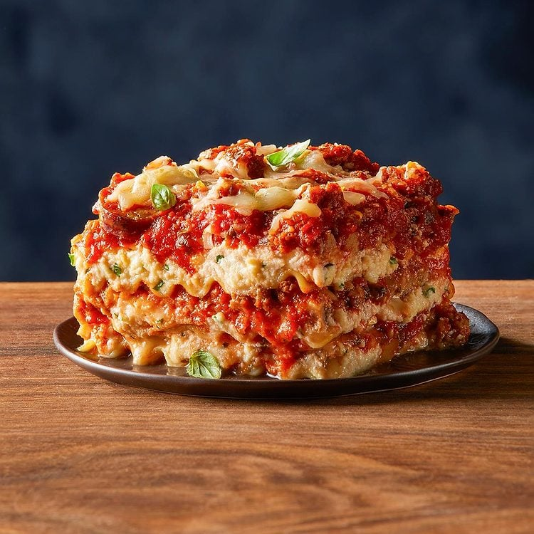

← Back to Home
Lasagna

Description:
Layers of wide pasta sheets, a rich and savory meat sauce, and a
blend of melted, golden cheeses baked to absolute perfection.
Pure comfort food!
Ingredients:
- 9 lasagna noodles (cooked)
- 1 lb ground beef
- 1 jar (24 oz) marinara sauce
- 1 onion & 2 cloves garlic (chopped)
- 15 oz ricotta cheese
- 2 cups shredded mozzarella cheese
- ½ cup grated Parmesan cheese
- 1 large egg
- Salt, pepper, and oregano to taste
Steps:
- Cook noodles: Boil lasagna noodles according to package instructions, then drain.
- Make the meat sauce: Cook onion and garlic in olive oil, add ground beef until browned, then stir in marinara sauce and spices.
- Mix the cheese: In a bowl, combine the ricotta cheese, half of the mozzarella, the Parmesan, and the egg.
- Layer the lasagna: In a baking dish, layer meat sauce, noodles, and the cheese mixture. Repeat until ingredients run out, topping with the remaining mozzarella.
- Bake: Bake at 375°F (190°C) for 25–30 minutes until the cheese is melted and bubbly. Let cool before serving!